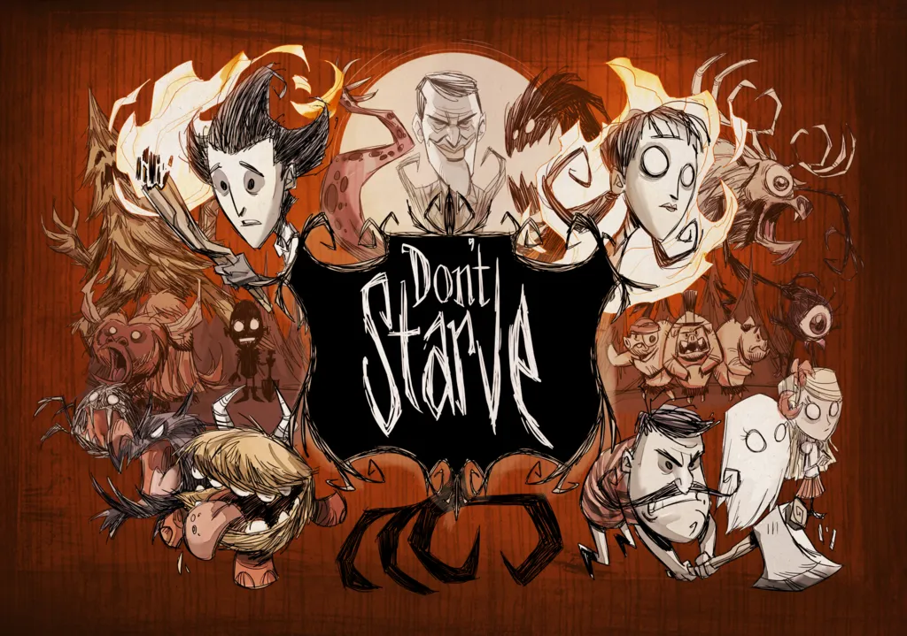

- Stardew Valley
- Don't Stave
- Raft
Don't Stave를 소개합니다.

게임 바로가기
Don't Stave는 'Klei Entertainment'라는 개발사가 만든 게임입니다.
2013.04.23에 출시된 게임으로 생존 어드벤처 장르입니다.
[게임 줄거리]
게임을 시작하면 캐릭터가 정신을 잃은 채 어딘가에 누워 있다. 그때 검은 정장을 입은 중년 남자가 나타나 조소를 띠며
"친구, 안색이 안 좋구만. 밤이 오기 전에 먹을 걸 찾는게 좋을 거야!"
(Say pal, you don't look so good. You'd better find something to eat before night comes!)
라고 말하며 사라진다. 그 직후 캐릭터가 눈을 뜨며 플레이가 시작된다.
플레이어가 낯선 자연 환경 속에서 채집과 사냥, 농사를 통해 오랫동안 살아남아야 하는 생존게임이며, 재료를 채집해서 도구를 만들고 그 도구들로 생존해 나간다는 점에서 마인크래프트나 Unreal World, Stranded 2, Haven & Hearth 혹은 워크래프트 3의 커스텀 맵인 Wilderness Survival과 흡사하다.